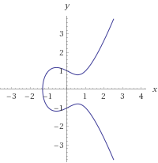
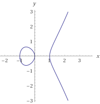

## Elliptic Curves (Over real numbers)
An **Elliptic Curve** is a plane curve of the form
$$ y^2 = x^3 + ax + b $$
where $a$ and $b$ are real numbers. This type if equation is called a
_Weierstrass's elliptic function_ and can be considered a popular choice for elliptic curves.
There is an important property for a curve to be elliptic in nature; It should be non-singular in nature.
This means, the curve should not have cusps, self-intersections or isolated points. To enforce this
condition, the discriminant of the above equation should obey:
$$
\begin{align}
\Delta = & -16 (4a^3 + 27b^3) \\
\Delta \neq & 0 \\
\end{align}
$$
For the case of $\Delta$ less than zero, a non-singular curve has one component or one continuous curve.
eg:

Single component for $\Delta < 0$; Curve $y^2 = x^3 - x + 1$
or

2 components for $\Delta > 0$; Curve $y^2 = x^3-x$
List of contents
----------------
* [Group Theory for elliptic curves](group.html)
* [Addition Theory](addition.html)
* [Multiplication Theory](multiplication.html)
* [Elliptic Curve Diffie Hellman](ecdh.html)
* [Points on the curve](points.html)
* [Quadratic Congruences](quadratic.html)
* [Elliptic Curve Digital Signing Algorithm][signature.html]